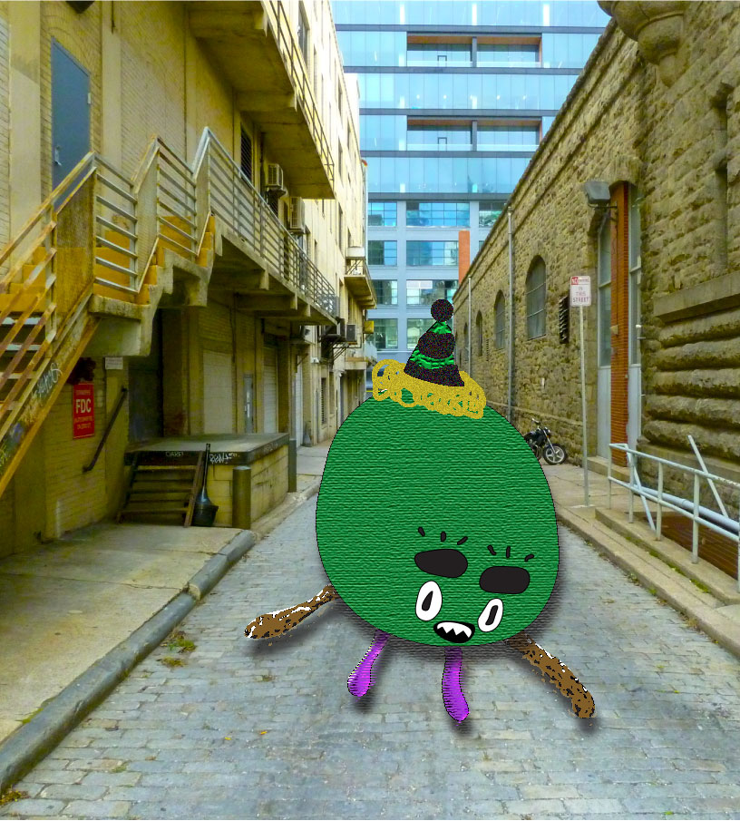
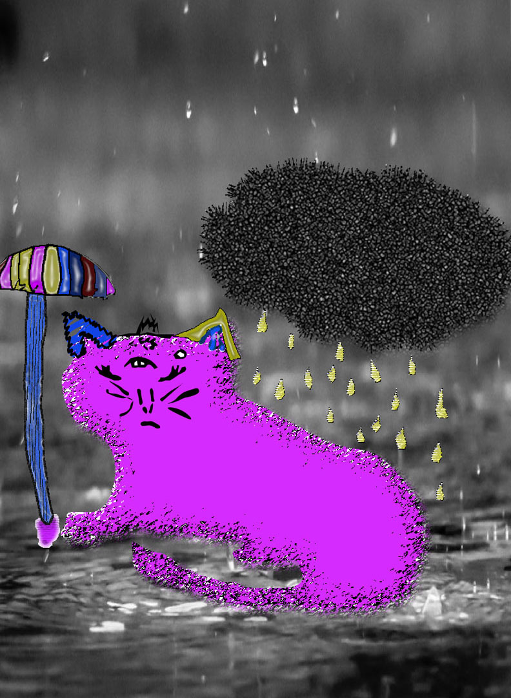
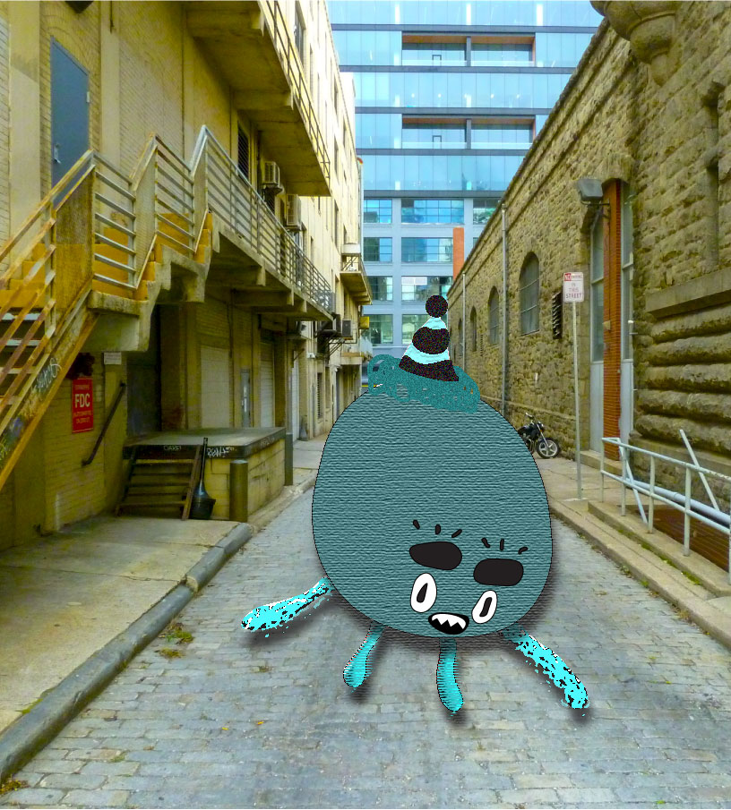
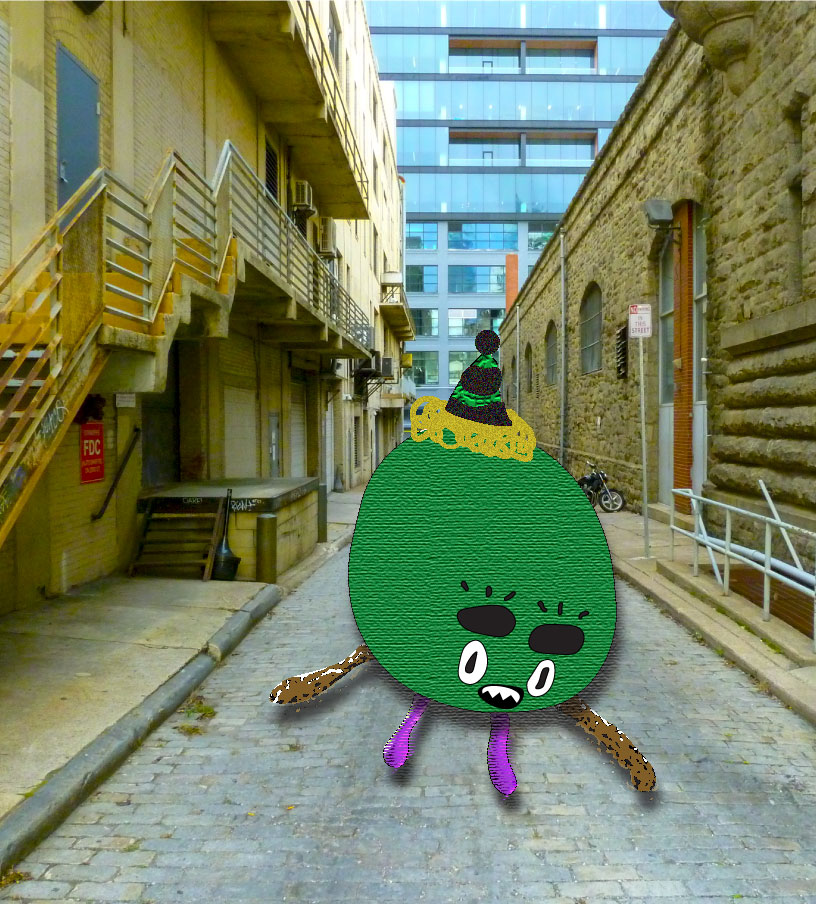
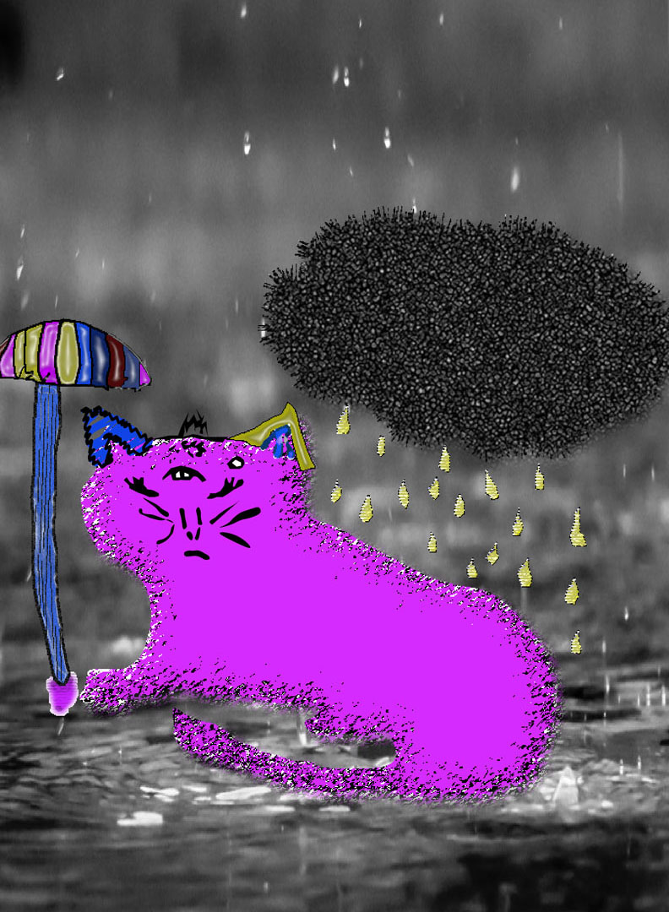
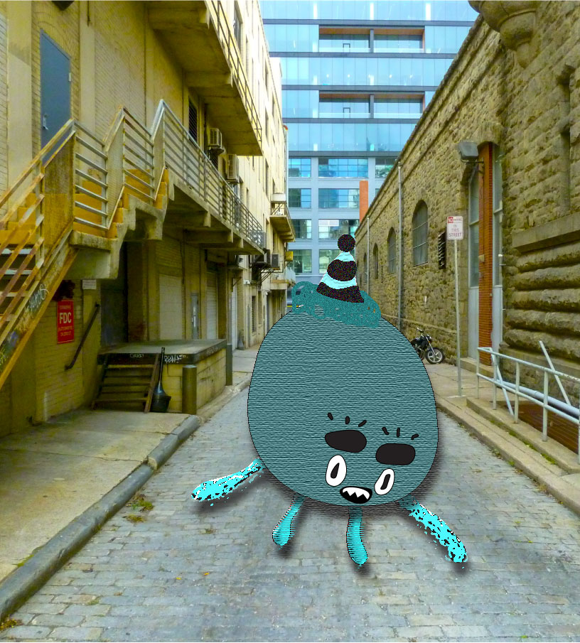

Here are a few pieces of visual and design artwork that I have done over the past two years. If you are interested in larger versions of these files feel free to send me an email asking about them.
Movie Still Vectorization and Neutralization
I used Adobe Illustrator to vectorize a movie still, in my case I chose a still from no country for old men. I vectorized the entire image and went through and changed the colors of each shape to define the foreground, middleground, and background. The tone of the colors remained the same in the first image as to the actual movie still, which is why many parts remained black.

For the second image in this project I took the first but I changed the effect the colors had on the viewer. Whereas in the first the image has clearly defined fore, middle, and background, the second image seeks to take away the bounderies between these, and instead sort the colors only by their tone. This has the effect of neutralizing the image, and making it all seem more like a single plane.

3D Space in paint
I've never been much of a painter and have always leaned towards digital art over physical, so this project presented a challenge for me. I had to paint a 3D space that felt real, and then using photoshop, a medium at which I am more versed than painting, add characters to the 3D space that fit into it.

Color and Visual effects in Illustrator
Working in Adobe Illustrator has become one of my favorite ways to do art. For this project I took a piece of art that one of my friends had done, and I vectorized it in Illustrator. After that was done I applied different effects to the different objects present in the image in order to make them more distinct. Then I applied different color pallets to the objects and these are just a few of the results.
 




